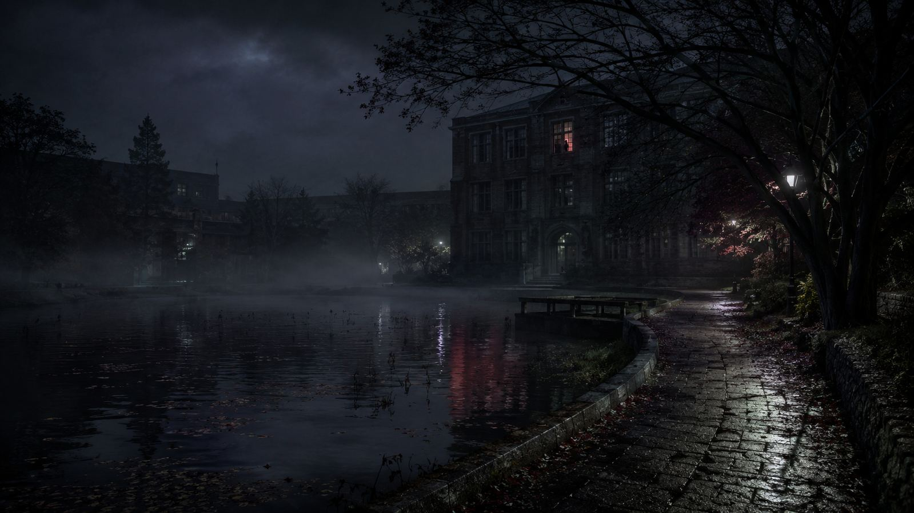

記録番号 02 — 未解決
高等科の文化祭で語られた「血洗いの池」の事件は、終わったはずだった。
しかし数か月後、学習院大学の構内で、同じ夢を見る学生が現れ始める。濡れた床を歩く足音。誰もいない教室の窓。池を覗いた瞬間に聞こえる、浅い呼吸。
「まだ、洗い終わっていない。」
来場者は、教室に残された痕跡をたどりながら、池の底に沈んだ“続き”へ近づいていく。

01 / THE EXPERIENCE
ここでは、企画の概要・開催情報・当日の案内をまとめて掲載します。
『血洗いの池 〜残穢〜』は、学習院大学ホラー研究会による、教室を使ったウォークスルー型のお化け屋敷です。来場者は少人数ずつ入場し、暗い空間・音・装飾・ストーリー演出を通して、池にまつわる噂の続きを体験します。
会場の場所、整理券の有無、受付方法などの詳細は、決まり次第このサイトでお知らせします。ご来場前に最新情報をご確認ください。
02 / STORY
物語を知ってから入ると、細かい演出をより楽しめます。
記録番号 02 — 未解決
高等科の文化祭で語られた「血洗いの池」の事件は、終わったはずだった。
しかし数か月後、学習院大学の構内で、同じ夢を見る学生が現れ始める。濡れた床を歩く足音。誰もいない教室の窓。池を覗いた瞬間に聞こえる、浅い呼吸。
「まだ、洗い終わっていない。」
来場者は、教室に残された痕跡をたどりながら、池の底に沈んだ“続き”へ近づいていく。
03 / PREVIOUS FILE
今回の『残穢』は、前回公開された「血洗いの池」の世界観を引き継いだ続編です。
前作では、学習院にまつわる「血洗いの池」の噂を中心に、不穏な物語と告知ページが公開されました。今回の『残穢』では、その噂が完全には終わっていなかったという前提で、大学編の物語へつながっていきます。
04 / INSIDE THE HOUSE
短時間で楽しめる、教室型のお化け屋敷を予定しています。
安全確保と没入感のため、数名ずつ順番にご案内する予定です。
ただ驚かせるだけでなく、教室内の装飾や音で物語を感じられる構成です。
混雑状況に応じて整理券制にし、待ち時間が長くなりすぎないよう案内します。
05 / VISITOR INFORMATION
未確定の項目は、決まり次第このページで更新します。
詳細は決まり次第公開します
06 / BEFORE YOU ENTER
安全に楽しんでいただくため、入場前に必ずご確認ください。
07 / QUESTIONS
現時点では詳細未定です。混雑時は整理券制を予定しています。
暗い空間・音・急な演出を含む可能性があります。苦手な方は無理をせず、スタッフにご相談ください。
学習院大学 目白キャンパス内の教室を予定しています。教室番号は確定後に掲載します。